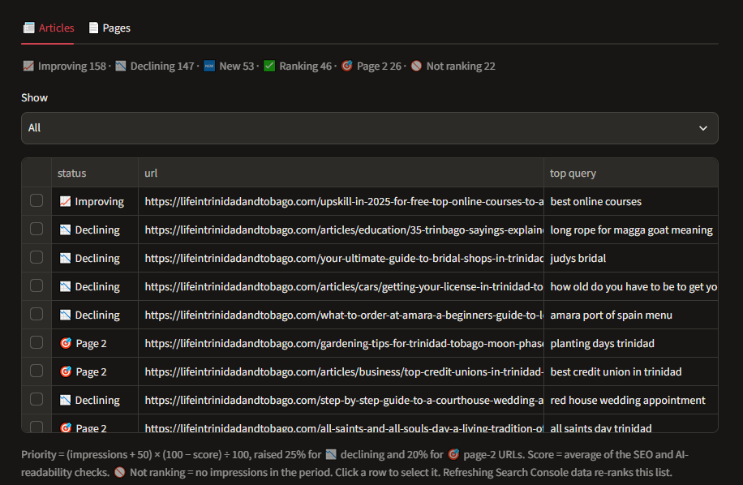
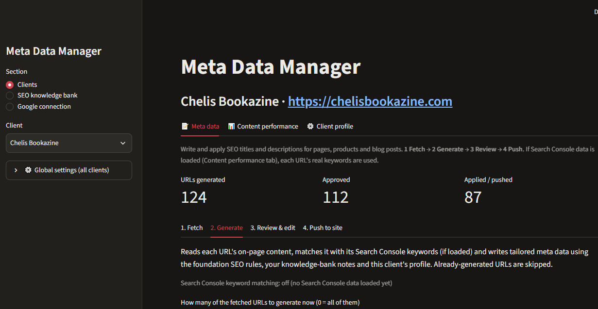
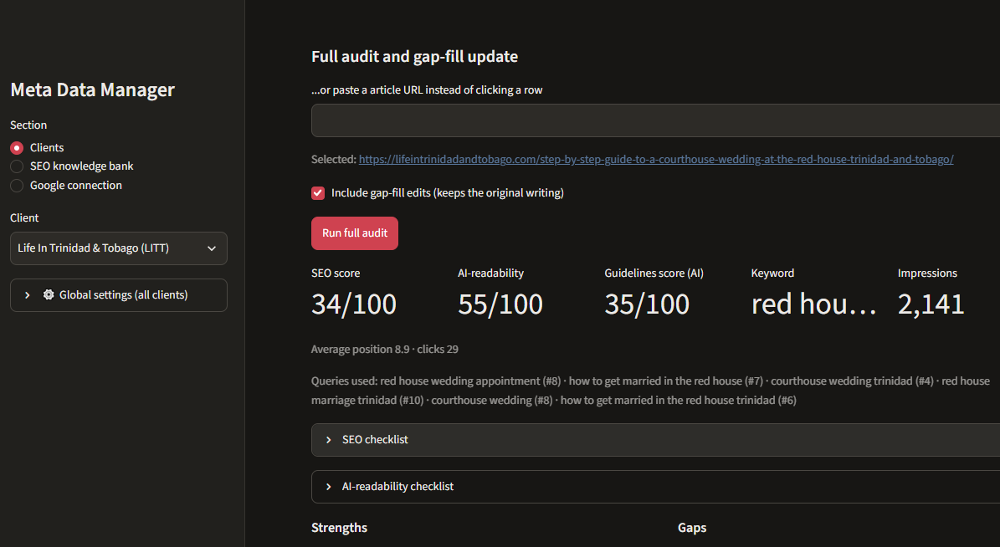

The AI SEO manager that tracks, audits and updates 8+ client sites
Checking rankings and rewriting metadata by hand does not scale. I built tools that do the repeat work and surface what needs a human.
8+client sites managed
3 moto consistent rankings and AI visibility per client
1dashboard for tracking, audits and updates
The challenge
Rankings, audits and metadata updates were spread across many client sites. Drops were found late and updates were slow.
What I did
AI SEO manager (Meta Data Manager). A web tool with a profile per client. It tracks rankings across 8+ client sites, scores each page for SEO and AI-readability, generates metadata and gap-fill content edits from real Search Console keywords, and pushes approved updates live.
n8n ranking monitor. A workflow that watches rankings, pushes an email alert when any URL drops and builds a priority list of the pages that need attention first.
Basecamp content pipeline. A Node.js pipeline on the Basecamp REST API that pushes generated content into Basecamp for internal approval.
Comment alert system. A Google Apps Script that picks up comments from team members on that content and updates everyone automatically.
Monthly Looker Studio dashboards. They keep non-technical stakeholders informed on campaign progress.
The results
Each client reached consistent rankings on major keywords and AI recognition within the first three months.
Ranking drops are flagged as they happen, with a ready-made fix list.
Generated content reaches the team for approval inside Basecamp, and comments are picked up without anyone chasing them.
Less manual checking, more time for strategy and content.

Content performance view: every URL is labelled improving, declining, new, ranking, page 2 or not ranking, then ranked by a priority score so the team knows what to fix first.

The meta data workflow for a client site: fetch URLs, generate titles and descriptions from page content and real Search Console keywords, review and edit, then push live.

Full audit for a single article: SEO score, AI-readability score, guidelines score, target keyword, impressions, position and the queries used, with optional gap-fill edits that keep the original writing.Next case study350% More Website Traffic